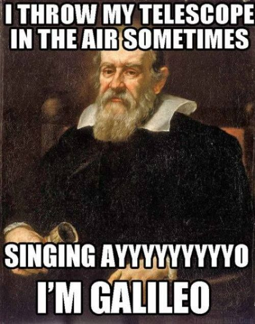
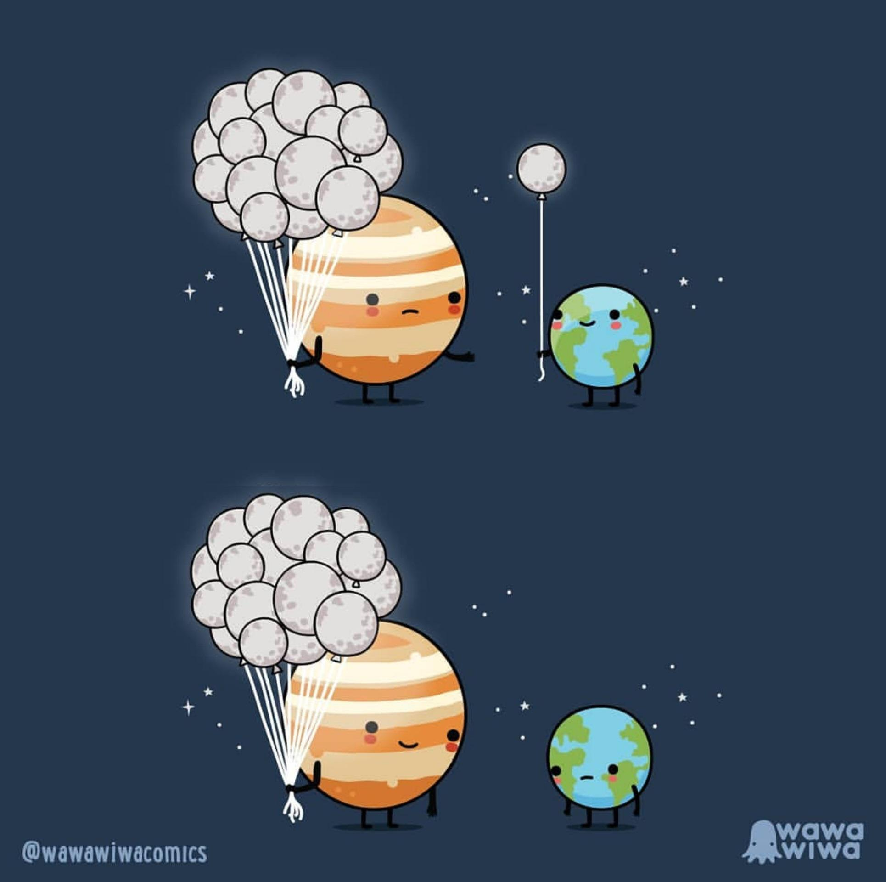

Gali-LOL
- Artiste dans l'Âme : Avant de devenir scientifique, Galileo envisageait sérieusement une carrière d'artiste. Il était attiré par le monde de l'art et avait même pris des cours de dessin.
- Un Doigt Exposé : Après sa mort, trois des doigts de Galileo ont été prélevés sur son corps. L'un de ces doigts est actuellement exposé au Museo Galileo à Florence, en Italie.
- Homme de Lettres : Galileo a nommé les lunes de Jupiter en l'honneur de la famille Médicis, mais elles ont finalement pris les noms de figures mythologiques associées à Zeus (l'équivalent grec de Jupiter). Il était également fan de Dante et a écrit une analyse scientifique de "L'Enfer de Dante", discutant des dimensions de l'enfer.
- Un Cratère à Son Nom : Un cratère sur la Lune porte le nom de Galileo, appelé de manière appropriée le "cratère Galileo".
Les Quatre Veilleurs de Galilée
- L'Apparence de Pizza d'Io : L'activité volcanique étendue d'Io recouvre sa surface de divers matériaux soufrés, lui donnant une apparence colorée, semblable à celle d'une pizza, avec des taches jaunes, rouges et oranges.
- Potentiels Aliens d'Europa : L'océan sous la surface d'Europa a conduit à des spéculations sur la vie extraterrestre. Les scientifiques ont même envisagé l'idée que l'océan pourrait abriter des monstres marins "européens"!
- Le Champ Magnétique de Ganymède : Ganymède est la seule lune connue pour avoir un champ magnétique significatif, probablement généré par un noyau de fer liquide ou de sulfure de fer—ce qui en fait une personnalité assez magnétique.
- Une Lune Plus Grande qu'une Planète : Ganymède n'est pas seulement la plus grande lune du système solaire, elle est aussi plus grande que la planète Mercure. Si elle orbitait autour du Soleil plutôt que de Jupiter, elle serait classée comme une planète.
- Patinage sur Europa : La surface d'Europa est faite de glace. Si vous pouviez vous tenir dessus, et si ce n'était pas pour le rayonnement mortel, vous pourriez peut-être patiner sur une lune !


D'autres sources interessantes:
Article de la NASA sur les lunes de JupiterApplication pour simulation de Jupiter et ses lunes
Animation explicative de Jupier et ses lunes
Telescope utilise par Galilee